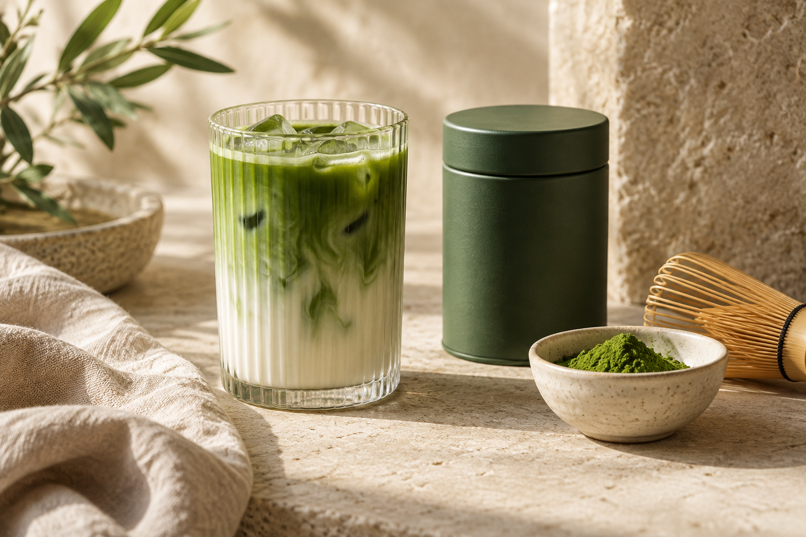

Traditional matcha
A small bowl. A whisk. A moment to yourself.
- Sift about 2 g of matcha into a bowl.
- Pour in 60–80 ml of water around 75–80°C.
- Whisk in a quick W motion until lightly frothy.
- Sip slowly. Adjust water to your taste.
A SMALL RITUAL. ALL YOURS.
Whisk, sip, slow down. Discover matcha and the simple pleasure of making a moment for yourself.
Shop Matcha ↗New to matcha? Start here →
FIND YOUR DAILY GREEN
Start with a bowl. Make it a latte.
Find a little joy in the making.
Sample collection · USD prices and sizes are illustrative. Products are not available to purchase.
OUR STORY, STILL UNFOLDING
A kettle warming. The sound of a whisk. That first, unhurried sip. This is the feeling at the heart of [Brand Name].
We’re making room for the everyday ritual of matcha — and for everyone finding their own way to enjoy it.
[Add your founder’s inspiration, verified sourcing regions, producer relationships, and target customers here.]
A FEW MINUTES. A FRESH START.
Matcha is finely ground green tea,
whisked into water instead of steeped.
A small bowl. A whisk. A moment to yourself.
Cool, creamy, and entirely your own.
A little tip: sift first for a smoother cup, and use warm rather than boiling water.
A LITTLE MATCHA KNOW-HOW
Your daily ritual starts with
a few simple answers.
Matcha can taste grassy, savory, and gently bitter. Flavor varies by tea and preparation. Product-specific tasting notes will be added after the collection is confirmed.
Yes. Matcha naturally contains caffeine. The amount varies by product and serving size. [Add verified caffeine information for each product.]
Keep it tightly sealed, away from heat, light, and moisture. Always follow the storage instructions and best-before date on your product’s packaging.
[Add delivery regions, processing times, shipping fees, and estimated delivery windows.] This concept store does not accept orders yet.
[Add the return window, product eligibility, refund process, and customer support contact.] No return policy has been established for this concept store.